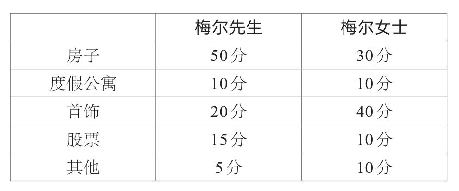

在生活中，有一些情况我们必须平均分配——比如，联合政府执政(1)时部长职位的分配方法，离婚后财产的所属权问题等。
最简单的公平分配方法是：一个人分，另一个人选。但如果涉及并不能分割的物品或者需要平均分配的人数在三个人以上的问题，这种简单的分配方法就会失灵。
公平分配并不意味着每个人得到的物品完全相同，而意味着每个人拿到了自己心目中相同价值的物品——也许有的人对房产视若无睹，但认为祖母留下来的瓷器弥足珍贵，这时就要将每个物品在不同人心目中的定价考虑在内。博弈论学家S.布拉姆斯（S.Brams）和数学家A.D.泰勒（A.D.Taylor）为了解决这种复杂的公平分配问题，共同提出了一个公平分配公式。
假设梅尔先生和他的妻子想要离婚，他们将有归属争议的财产列了出来，然后按照自己对这些物品的重视程度给其打分，总分为100分。分值结果如下：

首先，他们都能得到自己评分比对方高的物品：梅尔先生可以得到房子和股票的所有权，梅尔女士可以得到首饰和其他物品的所有权。换言之，梅尔先生拿到了50+15=65分，梅尔女士则拿到了40+10=50分。
接着，分配他们评分相同的物品。因为梅尔女士总分较少，所以将夫妻二人评分相同的东西，即度假公寓分给梅尔女士。此时梅尔女士的总分应为40+10+10=60分。
最后，进行一个微调，使得两人最终得到的评分总和相同。因为梅尔先生得分较多，所以他必须从自己得到的东西里拿出一些转让给梅尔女士。此时最重要的是厘清两个人根据物品重要程度所做的排序，这个排序是根据梅尔先生和梅尔女士对同一物品的主观定价的比值确定的，这个比值的计算方式如下：
梅尔先生对一件物品的评分／梅尔女士对一件物品的评分
如此一来，房子的评分应该是50/30=1.67，股票的评分为15/10=1.5。选取两个人评分相差最小的物品（比值最靠近1的），在此种假设之中则为股票——因为梅尔夫妇对于股票的评分没有太大差距。梅尔先生仍然可以享有房子的产权，但股票就需要夫妻双方公平分配了，我们假设梅尔太太应得到p部分的股票(0<p <1)，那么梅尔先生就只能拿到剩下的1－p部分。这样梅尔女士最终得到物品的总分就达到60+10p，梅尔先生最终得到物品的总分为50+15(1－p)，我们令两式相等：60+10p=50+15(1－p)，解方程，得到p=1/5，即20%。
为了使分配公平，两个人都能拥有与心理定价相同的物品，梅尔女士需要分得20%的股票所有权，梅尔先生则享有80%的股票所有权。所以，梅尔女士得到物品的最终分数为40+10+10+10×1/5=62分，而梅尔先生得到物品的最终分数同样也是50+15×4/5=62分。
有趣的是，通常情况下按照这种处理方式每个人最后得到的物品的价值大约都是“心理估价”的2/3。
这是数学上和平解决“玫瑰战争”的一种方式。
大家还能想到这一公平分配方式的其他有意思的应用吗？
(1) 这里指多党联合执政。